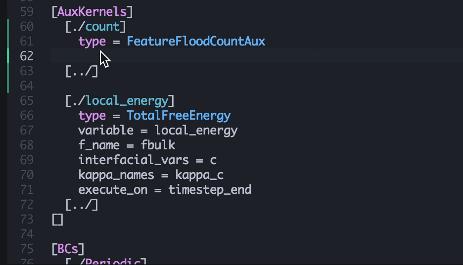

Setup Atom Editor for MOOSE
Atom is a text editor developed by GitHub with a flexible plugin structure. Several plugins are available to customize Atom for MOOSE development, some specifically developed for MOOSE.
Setting up Atom
Installation packages can be downloaded for Mac, Linux, and Windows operating systems from the Atom website. The editor has an automatic update system for both the core editor as well as the installed plugins.
First Steps (for MacOS only)
Start Atom for the first time and select Atom->Install Shell Commands. This activates the
atomandapmshell commands for use from a terminal.Close Atom. From now on we will only start it from our MOOSE project directories using
atomensuring that Atom sees the full MOOSE build environment.
Important commands

Opening new files with the fuzzy search (Cmd-T).
Cmd-Shift-P opens the command palette. Every available Atom command can be accessed by typing a few letters here. The dropdown list shows the keyboard shortcuts.
Cmd-T opens a file anywhere in the current project tree (i.e. below the directory in which you issued the
atom .command. No need to know the precise path or even the precise spelling of the filename!
Plugins
The following plugins should be installed to effectively develop MOOSE based codes and edit MOOSE input files using Atom

autocomplete-moose in action.
switch-header-source: Use Ctrl-Alt-S to switch between corresponding header and source files.
language-moose: Syntax highlighting and automatic indentation for MOOSE input files, C++ code snippets for all MOOSE systems, and highlighting of select MOOSE C++ types.
autocomplete-moose: Context sensitive autocompletion for MOOSE input files.
make-runner: Press Ctrl-R to build the current project from within Atom. Features clickable compile error messages to jump straight to the locations with the compile errors.
autocomplete-clang: Type-aware C++ autocompletion. Use
make clang_completein your project directory to generate the necessary configuration file.clang-format: Uses clang-format with the custom MOOSE style rules to format your code. Can be set to reformat automatically when saving or manually by pressing Cmd-Shift-K.
Recommended settings
In the whitespace core package (Settings->Packages search for 'whitespace') deactivate Ignore Whitespace On Current Line.